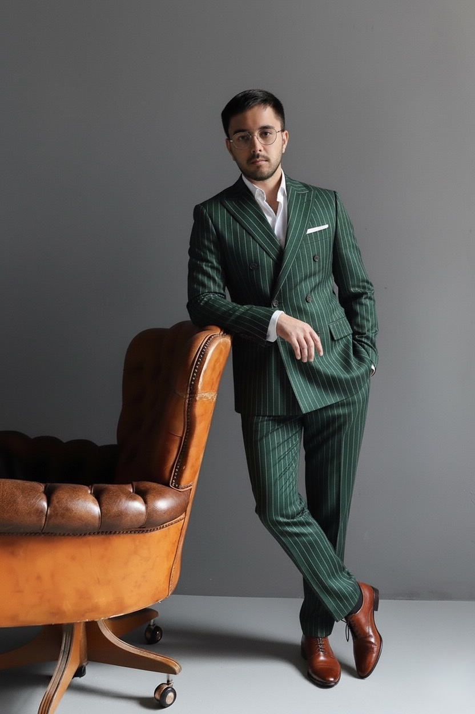
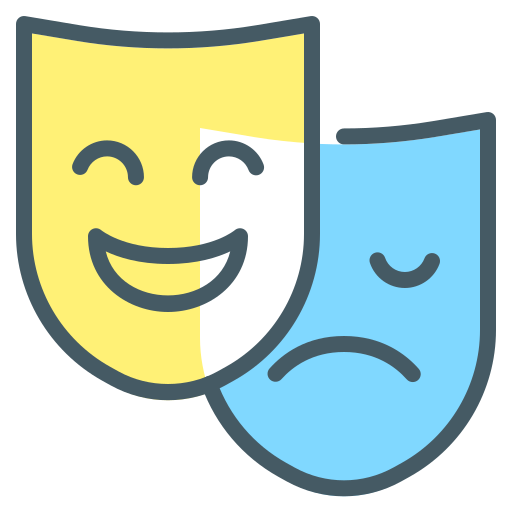

Дмитрий Костюк
иллюзионист, автор шоу и основатель KOSTYUK PROJECT
Я занимаюсь иллюзионным искусством более 10 лет и создал собственный мир, где магия становится частью жизни. Мои проекты объединены в экосистему KOSTYUK PROJECT, в которую входят:
-

Шоу «Секрет» — философский театральный спектакль, где каждый номер раскрывает тайну человеческого восприятия.
-
 Школа фокусов — первая в Ярославле образовательная программа, где дети учатся не просто трюкам, а уверенности, артистизму и работе на сцене.
Школа фокусов — первая в Ярославле образовательная программа, где дети учатся не просто трюкам, а уверенности, артистизму и работе на сцене. -
 Частные выступления — магия для особых событий: свадьбы, корпоративы, юбилеи, дни рождения.
Частные выступления — магия для особых событий: свадьбы, корпоративы, юбилеи, дни рождения.
Каждое направление решает свою задачу, но все они связаны одной идеей: магия — это не только иллюзия, это способ вдохновлять людей, раскрывать их внутренний потенциал и дарить незабываемые эмоции.
Моя миссия — делать так, чтобы каждый зритель и ученик чувствовал себя частью чуда.